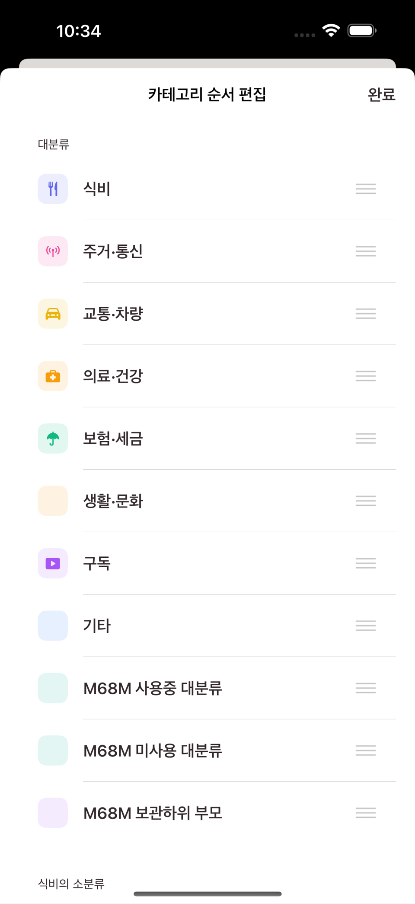
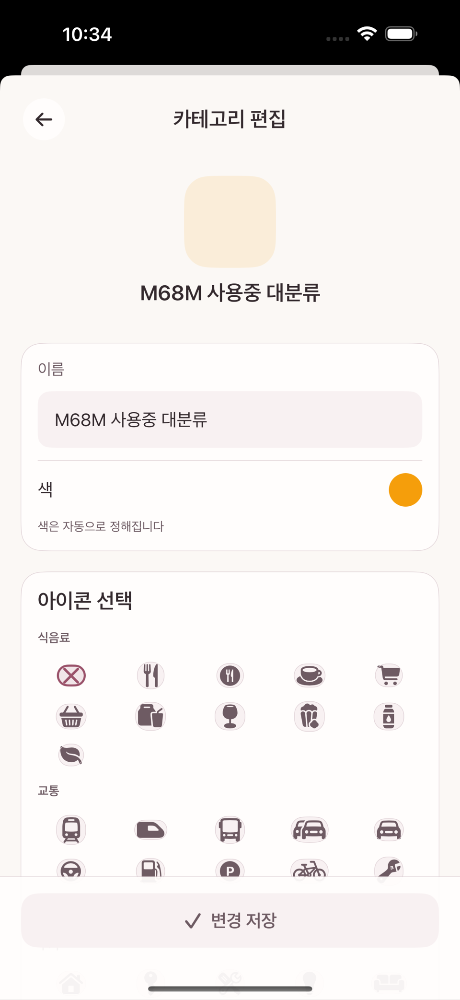
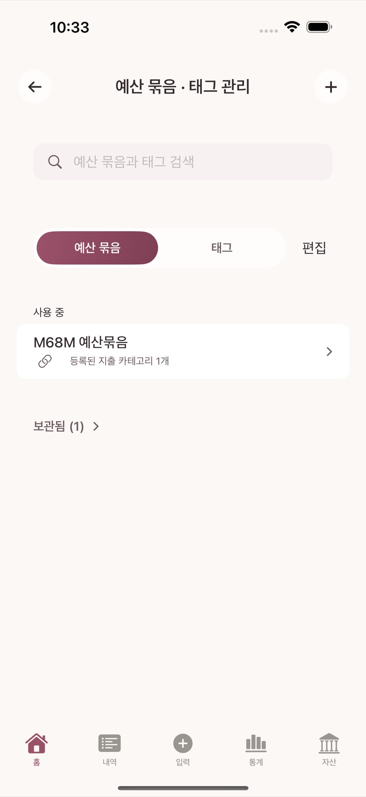

카테고리는 관리 메뉴(iPhone은 상단 메뉴 버튼을 눌러 여는 드로어, iPad·Mac은 설정의 "카테고리 및 자동화" 섹션)의 카테고리 행에서 관리한다. 화면 제목은 카테고리 관리다.
카테고리는 대분류(지출/수입 각각의 큰 갈래)와 그 아래 소분류 2단계 구조다.
새로 만들 때는 이름만 입력한다(아이콘·색상 선택 없음). 만든 뒤 그 카테고리를 다시 열어 편집 화면으로 들어가야 아이콘 선택 그리드가 나타나고, 원하는 SF Symbol을 골라 바꿀 수 있다. 색상은 사용자가 고를 수 없고 항상 자동으로 배정된다. 소분류가 하나도 없는 대분류는 거래에 직접 쓸 수 없다.
상단 바의 순서 편집 버튼을 누르면 대분류 순서와, 각 대분류 안의 소분류 순서를 각각 드래그로 바꿀 수 있다.

카테고리 관리 화면과 순서 편집 모드

카테고리 편집 화면의 "아이콘 선택" 그리드
카테고리를 더는 쓰지 않게 되면 삭제 대신 보관하는 것이 기본이다. 과거 거래에 이미 쓰인 카테고리는 그 거래 기록을 지우지 않기 위해 완전히 삭제되지 않는다(자세한 예외는 14장 위험 작업 참고).
예산 묶음·태그 관리
같은 관리 메뉴의 예산 묶음 · 태그 행에서 예산 묶음과 태그를 함께 관리한다.
예산 묶음은 여러 카테고리를 하나의 지출 한도로 묶는 단위다(2장, 6장 참고). 이 화면에서 묶음을 만들고, 어떤 카테고리를 그 묶음에 연결할지 정한다.
태그는 카테고리와 별개로 거래 하나하나에 자유롭게 붙이는 라벨이다(예: #여행, #환불예정). 같은 태그로 여러 카테고리·계정에 걸친 거래를 가로질러 모아볼 수 있다.
이 화면에서도 순서 편집 ↔ 완료 버튼으로 묶음·태그의 표시 순서를 바꿀 수 있다.

예산 묶음 · 태그 관리 화면
카테고리와 예산 묶음은 독립적이다
카테고리를 새로 만드는 것과 그 카테고리를 예산 묶음에 연결하는 것은 서로 다른 결정이다. 카테고리만 만들고 예산 묶음에 연결하지 않으면, 그 카테고리의 지출은 특정 묶음의 사용액이 아니라 전체 배정 가능(풀)을 줄인다. 자세한 계산은 6장에서 다룬다.